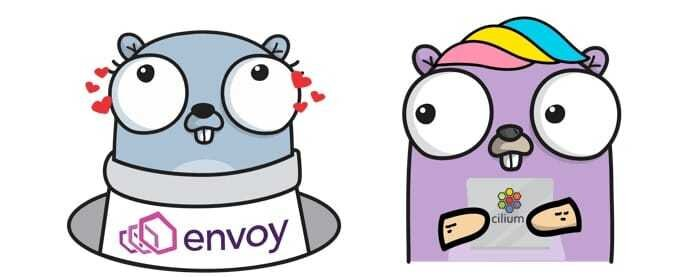
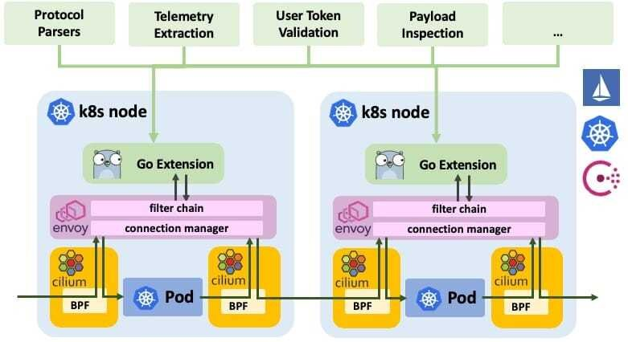
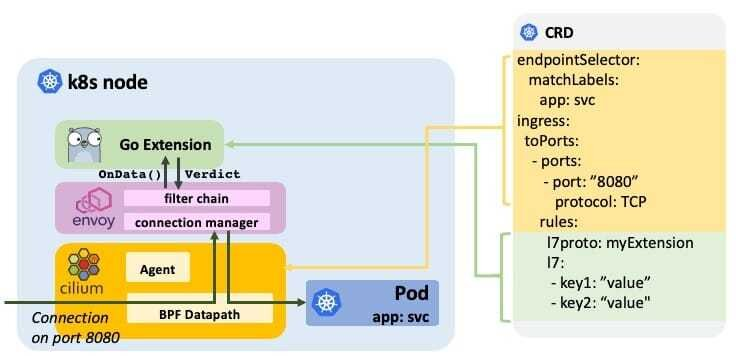

本文为翻译文章，点击查看原文。
我们很高兴地宣布Cilium 1.3发布了。这个版本加入了几个新特性。主要的亮点是实现了Cassandra和带有策略执行能力的Memcached协议解析器，作为Envoy的Go语言扩展包。
和往常一样，整个Cilium社区的开发者贡献巨大，他们在1.2到1.3版本的这段时间贡献了785个提交。
什么是Envoy的Go语言扩展？
从1.0版本开始，我们一直依赖Envoy处理所有的HTTP、gRPC以及HTTP的派生如Elasticsearch的请求。社区讨论如何扩大支持7层协议的范围，Envoy作为推动未来协议补充的首选平台是显而易见的。焦点迅速转移到寻找简化Envoy可扩展性的方法，并且允许重用现有的开源项目，如CNCF项目Vitess。于是实现Envoy的Go扩展的想法就诞生了。
在Cilium 1.3中，我们引入了Envoy的Go扩展作为其Beta特性。

- **扩展的透明注入：**在Cilium的帮助下，连接被透明地重定向到Envoy，而不需要修改应用程序或pod。重定向基于目标端口配置，可以根据labels、IPs、DNS以及ingress和egress连接的服务名称限定到源或目标服务，并通过扩展的名称将连接映射到扩展。重定向是通过CiliumNetworkPolicy CRD或REST API配置的。Envoy可以被配置为在每个pod中作为sidecar或作为每个node的独立代理运行。
- **完全分布式：**Go扩展完全分布在每个Envoy节点或pod内部，不需要为一个数据处理的集中化控制面板。当然，go扩展本身可以调用任意的外部控制面板组件来报告遥测数据或验证请求。
- **动态扩展映射：**Go扩展被设计为共享库提供给Envoy。Cilium可以根据设置好的重定向自动加载相应的Go扩展来配置Envoy，并在连接数据时调用它。未来的版本将支持在运行时更新和重新加载扩展，而无需重启Envoy并且也不会丢失连接状态。
- **通过CRD配置扩展：**通过CRD或REST API使用通用键值对配置Go扩展。这允许传递如安全策略、安全令牌或其他的配置，而无需让Envoy知道。
- **通用访问日志：**与配置类似，扩展可以返回通用键值对，这些键值对将提取的可见性传递到访问日志层。
- **沙盒化：**沙盒确保任何解析器的不稳定性都不会破坏Envoy的核心。受Matt Klein发表的文章Exceptional Go启发，解析器被容许panic或抛出异常。当panic发生时，信息被记录到访问日志中，TCP连接与被关闭的请求关联。
Cilium是什么？
Cilium是一个开源软件，可以透明地提供和保护部署在诸如Kubernetes、Docker和Mesos等Linux容器管理平台的应用程服务之间的网络和API连接。
Cilium的基础是一种新的Linux内核技术BPF，它支持在Linux内部动态的注入安全、可见性和网络控制逻辑。除了提供传统的网络层安全，BPF的灵活性还让API和流程级别的安全，保护容器或pod间通信成为了可能。因为BPF在Linux内核中运行，Cilium的安全策略可以在不修改程序代码或容器配置的情况下使用和更新。
有关Cilium更详细的介绍请参见**Introduction to Cilium**
Envoy是什么？
Envoy是一个7层代理和通信总线，被设计用于大型的面向服务的架构。这个项目诞生于以下理念：
网络应该对应用程序透明。当网络和应用程序出现问题时，应该很容易确定问题的根源。
你可以通过Envoy的文档 What is Envoy了解更多关于Envoy的内容。
怎样编写Envoy的Go语言扩展
编写Envoy的Go扩展很简单。为说明这一点，我们将为R2-D2控制协议实现一个基本的协议解析器，并实现过滤逻辑用来排除任何包含字符串”C-3PO”的控制请求。

要实现扩展的主要API是OnData()函数，当Envoy收到通过CiliumNetworkPolicy映射到扩展连接的数据时，就会调用这个函数。函数必须解析数据并返回下面的断言之一：
- MORE：解析器需要更多的字节来继续解析。
- PASS：传递n字节数据流。
- DROP：删除n字节数据流。
- INJECT：向指定的方向注入n字节的数据。
- ERROR：发生了解析错误，连接必须关闭。
- NOP：什么也没发生。
为了注册扩展，需要创建一个必须实现Create()函数的解析器工厂。当Envoy建立了一个新的连接并使用解析器时就会调用该函数。
import (
"github.com/cilium/cilium/proxylib/proxylib"
)
type parser struct{
connection *proxylib.Connection
}
func (p *parser) OnData(reply, endStream bool, dataArray [][]byte) (proxylib.OpType, int) {
data := string(bytes.Join(dataArray, []byte{}))
msgLen := strings.Index(data, "\r\n")
if msgLen < 0 {
return proxylib.MORE, 1 // No delimiter, request more data
}
msgStr := data[:msgLen]
msgLen += 2 // Inlcude the "\r\n" in the request
if reply {
return proxylib.PASS, msgLen // Pass responses without additional parsing
}
if strings.Contains(msgStr, "C-3PO") {
return proxylib.DROP, msgLen
}
return proxylib.PASS, msgLen
}
type factory struct{}
func (f *factory) Create(connection *proxylib.Connection) proxylib.Parser {
return &parser{connection: connection}
}
func init() {
proxylib.RegisterParserFactory("r2d2", &factory{})
}
最后，将新的解析器导入到proxylib包中。libcilium.so将包含解析器并被Envoy加载。编辑文件proxylib/proxylib.go：
import (
[...]
_ "github.com/cilium/cilium/proxylib/r2d2"
)
上面的示例省略了扩展配置、集成到策略代码库以及访问日志等内容。学习如何编写Go扩展，请参阅指南Envoy Go Extensions。
Cassandra支持（Beta）
Cassandra 是一个流行的NoSQL数据库管理系统。它通常被多个服务大规模的访问并在团队间共享。Cilium 1.3引入了对Apache Cassandra 协议的支持，并提供了可见性和策略执行能力。
Cassandra的Go扩展能够在以下协议字段上提供可见性和执行能力：
- query_action： 这个行为在数据库的
SELECT，INSERT，UPDATE等操作上执行，字段总是精确匹配。 - query_table： 查询执行的表，以正则表达式进行匹配。
例子：Empire如何通过表限制Cassandra访问
下面的示例展示了Empire如何暴露有限的访问给运行在端口9042的Empire Cassandra集群。Outposts被标签app=empire-outpost标识，并具有以下权限：
SELECT操作在表"system.”和”system_schema.“上执行INSERT操作在表"attendance.daily_records"上执行。注意outposts不能从这些表读取，因此不能从其他outposts读取每日记录。
apiVersion: "cilium.io/v2"
kind: CiliumNetworkPolicy
description: "Allow only permitted requests to empire Cassandra server"
metadata:
name: "secure-empire-cassandra"
specs:
- endpointSelector:
matchLabels:
app: cass-server
ingress:
- fromEndpoints:
- matchLabels:
app: empire-outpost
toPorts:
- ports:
- port: "9042"
protocol: TCP
rules:
l7proto: cassandra
l7:
- query_action: "select"
query_table: "system\\..*"
- query_action: "select"
query_table: "system_schema\\..*"
- query_action: "insert"
query_table: "attendance.daily_records"
这是一个简单的例子，更多复杂示例请参阅 Cassandra getting started guide 。
Memcached支持（Beta）
Memcached是一种流行的基于内存的分布式缓存，通常用于缓存或在服务之间共享数据。随着memcached解析器的golang扩展加入Envoy，Cilium现在可以执行安全规则去限制memcached客户端的某些命令，比如读写，也可以根据key前缀进行限制。
例子：Rebels如何保护共享的memcached服务
在下面的示例中，Rebels运行了一个标签为app=memcached的memcached服务，几个服务与memcached交互并应用不同的规则：
function=fleet-maintenance标识的维护服务被授予对前缀为alliance/fleet的所有key的读写权限。禁止访问任何其他key。function=fleet-monitoring标识的监控服务仅对前缀为alliance/fleet的key授予读权限。禁止对前缀中的key进行写入访问或访问前缀之外的任何key。- 所有Jedis被标签
role=jedi标识，拥有完整的Memcached服务，可以访问所有的key。
apiVersion: "cilium.io/v2"
kind: CiliumNetworkPolicy
description: "Secure the Rebel memcached service"
metadata:
name: "secure-rebel-alliance-memcache"
specs:
- endpointSelector:
matchLabels:
app: memcached
ingress:
- fromEndpoints:
- matchLabels:
function: fleet-maintanence
toPorts:
- ports:
- port: "11211"
protocol: TCP
rules:
l7proto: memcache
l7:
- command: "writeGroup"
keyPrefix: "alliance/fleet/"
- command: "get"
keyPrefix: "alliance/fleet/"
- fromEndpoints:
- matchLabels:
function: fleet-monitoring
toPorts:
- ports:
- port: "11211"
protocol: TCP
rules:
l7proto: memcache
l7:
- command: "get"
keyPrefix: "alliance/fleet/"
- fromEndpoints:
- matchLabels:
role: jedi
toPorts:
- ports:
- port: "11211"
protocol: TCP
rules:
l7proto: memcache
l7:
- command:
使用memcached的完整示例，请参阅 Memcached getting started guide。
社区
Linux基金会"Core Infrastructure Initiative"最佳实践
我们致力于在开放和最好的开源实践中开发Cilium，包括对安全的坚定承诺。我们很高兴地宣布，我们已经完成了所有工作，获得了Linux基金会 Core Infrastructure Initiative的 CII Best Practices殊荣 。在 这里了解更多关于奖章的信息。
特别兴趣组（SIG）介绍
社区的关注点越来越多样化。为了确保项目的可伸缩性，我们正式引入了特殊兴趣组（SIGs）来帮助提供一些组织结构。已经创建了以下的SIGs：
- Datapath： (#sig-datapath) 所有BPF和Linux内核相关的数据通路代码拥有者。
- Documentation： (#sig-docs) 所有文档相关的讨论。
- Envoy： (#sig-envoy) Envoy， Istio和所有7层协议解析器的维护。
- Policy： (#sig-policy) 所有策略相关的主题。这个SIG负责所有与安全相关的API和实现逻辑。
- Release Management： (#launchpad) 负责发布管理和向后移植的过程。
任何人都可以建立额外的SIGs。这个过程很简单有文档说明
1.3 版本新特性
- Envoy的Go语言扩展
- 令人兴奋的全新的Envoy Go扩展API，包括通用配置和访问日志API（Beta版本）
- Cassandra和Memcached 协议支持
- 使用新的Envoy Go扩展实现了Cassandra和Memcached的新协议解析器。这两个解析器都使用精确匹配、前缀匹配和正则表达式为操作类型和键/表名提供可见性和强制安全策略。（Beta）
- 安全性
- 为DNS/FQDN策略规则提供TTLs支持。
- 引入kube-dns、coredns和etcd操作符的标识。
- 新的安全标识"unmanaged"代表没有被Cilium管理的pod。
- 改进的安全实体“集群”，允许为集群中的所有pod定义策略（已管理、未管理和主机网络的）。
- 额外的遥测指标和监控
- 新的"cilium metrics list"命令通过CLI查看metrics列表。
- 许多额外的metrics：连接跟踪垃圾回收，Kubernetes资源事件，IPAM， 再生节点，服务，错误和警告计数器。
- 具有更高效的编解码协议的新监控接口。默认情况下用于较老的客户端。
- 网络改进
- 将连接跟踪表划分为TCP和非TCP，以更好地处理每个协议的长短连接的混合。
- 通过ConfigMap描述连接表大小的能力。
- 通过NodePort和HostPort更好的伪装流量行为，容许pods可以查看原始源IP。
- 全键值存储弹性
- 引入了在任何状态丢失后立即重新构造键值存储内容的能力。允许从备份中恢复etcd，或者在运行的集群中完全删除它，并影响最小。(Beta)
- 效率和扩展
- 在计算独立endpoint策略的成本方面有重大改进。关于这方面的工作还在继续。
- 新的宽限期，通过工作负载更改身份最小化连接影响。
- 更高效的安全身份分配算法。
- 新的通用框架检测和忽略Kubernetes事件通知，Cilium不需要动作。
- 在避免不必要的BPF编译方面的改进，以减少由此导致的CPU负载。初始化BPF模板以避免全编译。
- Kubernetes
- 增加对Kubernetes 1.12的支持
- 为CiliumEndpoints CRD自定义列 （需要Kubernetes 1.11支持）
- 为ulibc的兼容性从cilium-cni移除cgo
- 移除对Kubernetes 1.7的支持
- 文档
- 新的Ubuntu 18.04手册
- 对最新的BPF运行时特性的覆盖，例如BTF（BPF Type Format）
- 针对运行多主机网络的虚拟机/主机防火墙需求的文档
- 长期稳定版本(LTS)
- 1.3已经声明为LTS版本，在后续的6个月将作为向后移植的版本继续支持
更新指导
请查阅upgrade guide去更新你的Cilium部署，可以随时在Slack上联系我们。
发布
- 发布记录和二进制文件 1.3.0
- 容器镜像：
docker.io/cilium/cilium:v1.3.0